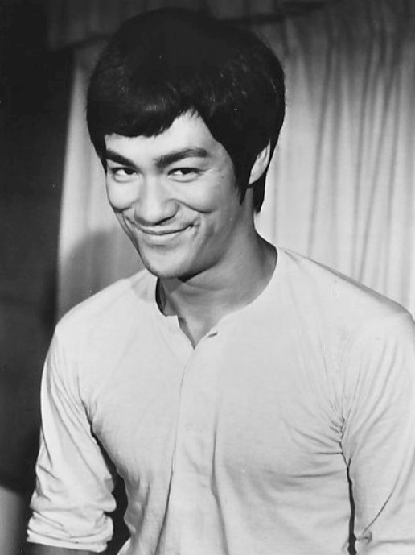

Bruce Lee foi um ator, artista marcial e filósofo sino-americano, conhecido por sua habilidade nas artes marciais e por seus filmes de ação.
Ele revolucionou o cinema de artes marciais e inspirou milhões de pessoas com sua disciplina, filosofia e estilo de luta, tornando-se uma lenda mundial.
Curiosidades:
- Criou o estilo de luta Jeet Kune Do
- Foi ator e artista marcial.
- Nasceu em São Francisco, mas cresceu em Hong Kong.
- Era conhecido por sua velocidade impressionante.
- Também estudou filosofia na universidade.
- 1. Morreu aos 32 anos e se tornou uma lenda mundial.
